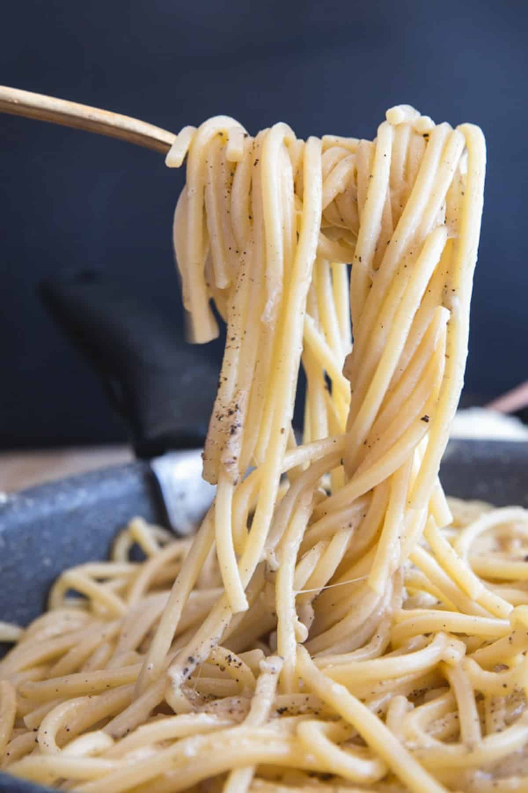

Cacio e Pepe
Odin Recipes

Description
Fresh pasta supports and melds the rich, creamy flavors of the classic Roman dish Cacio e Pepe
Ingredients
- Spaghetti - high quality pasta
- Black Pepper - freshly ground
- Pecorino Romano Cheese - good quality, freshly grated
- Parmesan Cheese - good quality, freshly grated
Steps
- Boil the water in a large pot, add the salt and the spaghetti.
- While the pasta is cooking, ground the pepper corns until you have the desired amount of pepper.